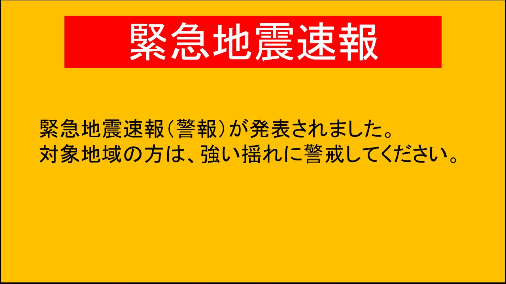
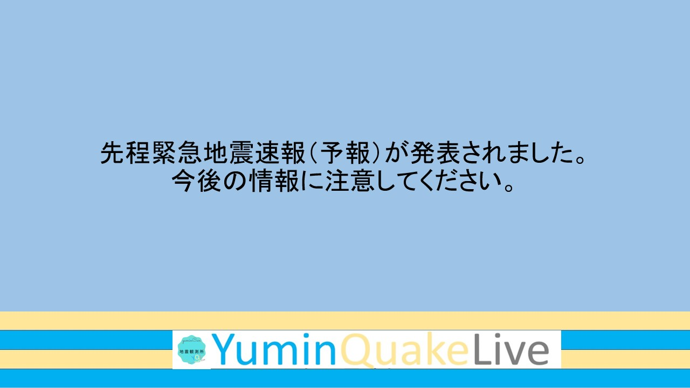
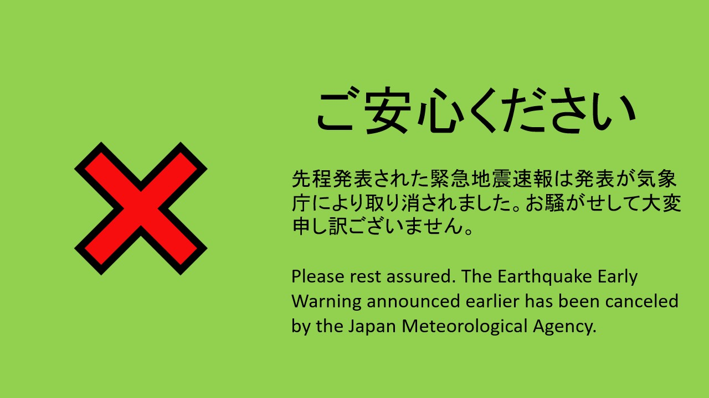
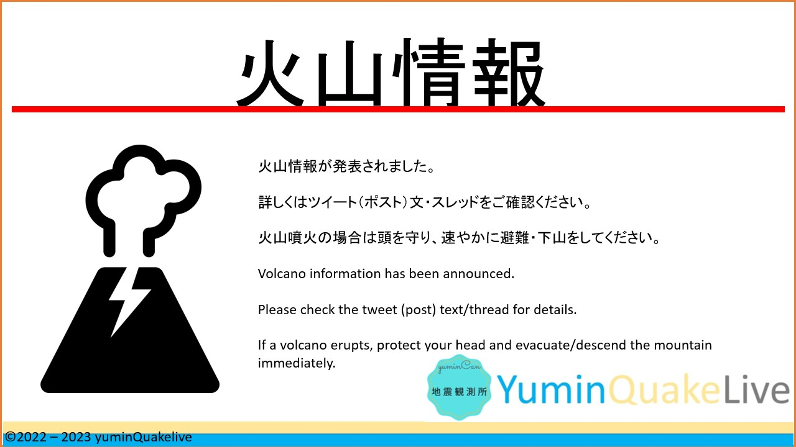
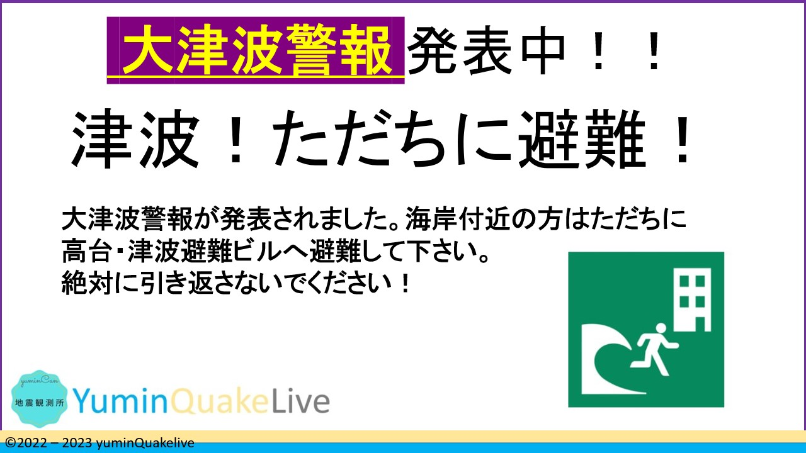

yumin地震観測所
事務部情報課┃情報発信用画像
ご自由にダウンロードしてください。
なお、利用にはyumin地震観測所画像利用ポリシーに従ってください。
EEW_Warning

EEW_forecast

EEW_Cancel

Volcano_infomention

Tsunami_Warning - 1

Tsunami_Warning - 2

Major_Tsunami_Warning

DistantPlace - EQ_info

Copy Right：©2022 - yuminQuakelive. All rights reserved.